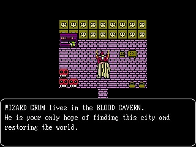
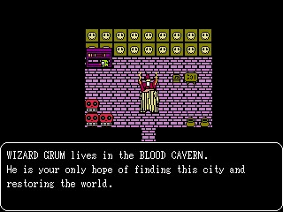

OFF (by Mortis Ghost)

Caution - Certain scenes in this game could be immensely shocking to an unwarned public. Or not...
OFF is a Belgian RPG Maker game developed by Mortis Ghost, and music composed by Alias Conrad Coldwood.
An absolute cult classic RPG, OFF follows the player controlling an entity called the 'Batter' as he sets out on his mission to 'purify' the land. You traverse the several Zones the land is divided in, meeting the strange inhabitants and combating the weird and terrifying spectral enemies.
The game plays generally similar to other RPGs combat-wise, however it does trade in the generic RPG element system (fire, ice, lightning, etc.) for a quite unconventional one. OFF instead uses the elements of smoke, metal, plastic, meat and sugar for several attacks and enemy weaknesses.
Whilst the overworld graphics is generally displayed in simple 8 bit pixel art, the battles however feature absolutely striking gnarly artwork. The way these spectral creatures are drawn with such striking linework and monochrome colors give the game a truly unique style.


The soundtrack by Alias Conrad Coldwood features a lot of ambient, surreal and creepy songs that give the game a very destinct mood. Of course, with the exceptions. Like the game's most popular song, Pepper Steak, a foxtrot and ragtime inspired song that plays when fighting regular enemies.
A link to the Download page of the OFF wikia with several translations for the game.
 
